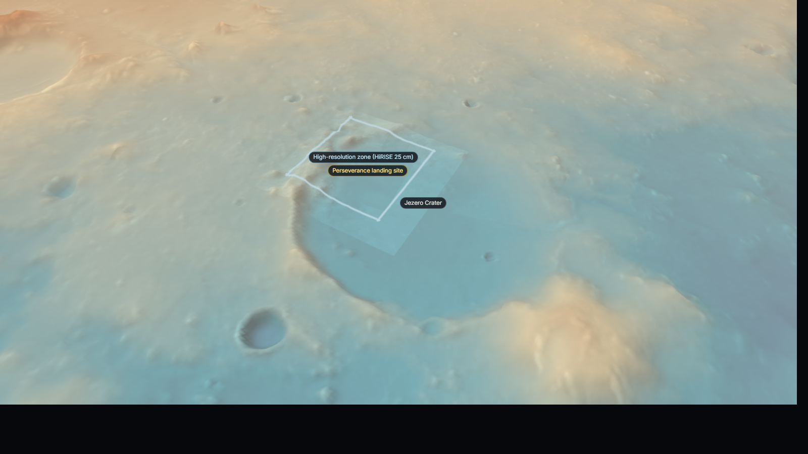
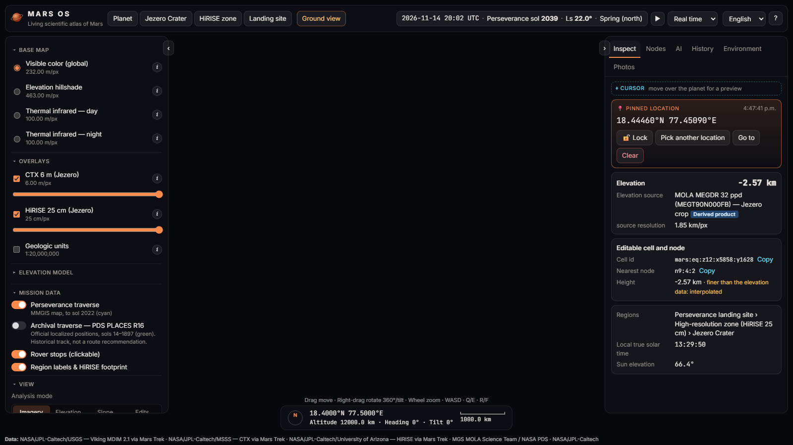
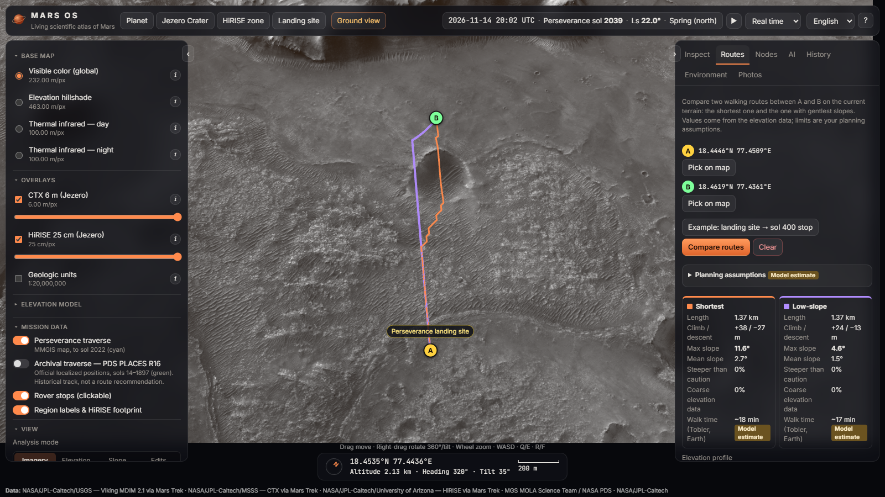
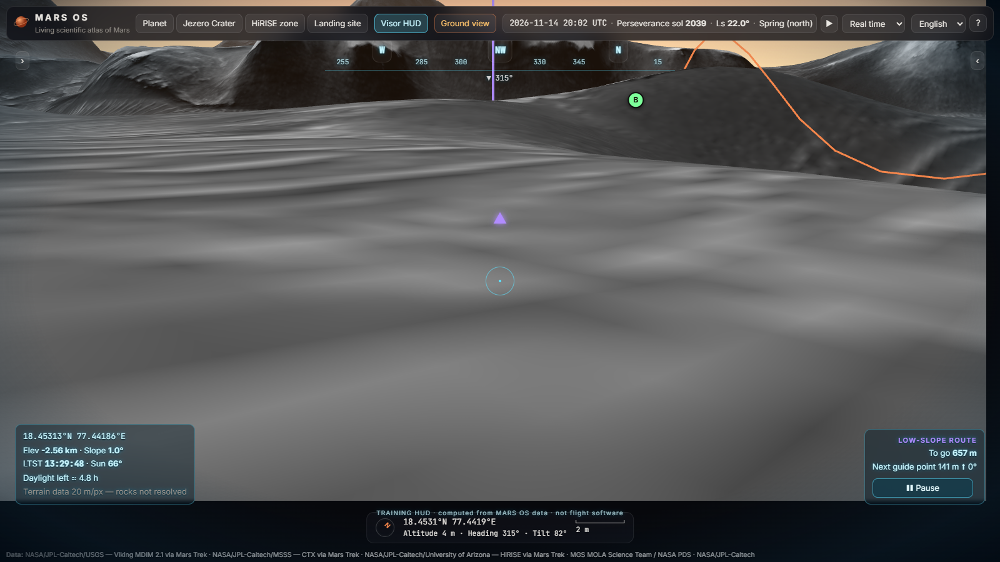

LIVE APP
LIVE APPMARS OS
The survival map of Mars, built on NASA data.
Team: MARS OS
Members: Abril Miranda Villa Márquez · Jorge Emilio Cornejo Murra
Interactive deck (live app in every slide): abrilvilla.dev/mars-os/deck
Live app: abrilvilla.dev/mars-os · Code: github.com/abrilvillita/mars-os
Before a Marswalk, a crew needs a map that answers five questions.
Robots explore Mars today. NASA sent each one to a different place, so each saw only a few kilometres. Orbiters mapped the whole planet. That knowledge is spread across dozens of datasets and pages.

LIVE · 10 NASA ROBOTSEvery NASA robot on Mars, on one map.

LIVE · TRY IT- 10 robots, Viking 1 to Ingenuity: photos, findings, instruments, NASA videos and the sounds of Mars.
- Real paths: Spirit, Opportunity, Curiosity, Perseverance, Ingenuity's 72 flights; 66 expedition stops with NASA text and images.
- Curiosity's and Perseverance's drives and raw photos per stop load live; on the ground the visor shows "Perseverance was here".
- Validated: landing coordinates checked against hardware seen by HiRISE; we corrected Pathfinder by 21.6 km and InSight by 16.3 km.
Where to land, and where the water is.
- 6,220 orbital mineral detections and Perseverance's 30 named rock samples.
- Landing tab: how sites are chosen and real landing ellipses (InSight computed 129.6 × 27.0 km; NASA: 130 × 27 km).
- Pin any point for a landing check: elevation, latitude, slope, nearest ice, minerals, nearest robot and zone.
Routes on measured slopes, with the hazards spelled out.

LIVE · 3D ROVER DRIVING- Shortest vs. gentlest route for a rover (Perseverance's 24° tilt limit, NASA 2026) or an astronaut.
- Compare with a real Perseverance drive: sols 380–420, 5.73 km driven vs. 2.99 km shortest; 88% of that shortest route crosses ground no rover has touched.
- Risk analysis: dune fields (the sand that trapped Spirit), slope, data resolution, HiRISE coverage.
- Why this route: data used and data missing. Downloadable route sheet with sources.
Mission Lab: send your own mission, see what it needs.
- Drop a crew, rover or base anywhere, even against the map's advice.
- Oxygen (NASA BVAD), energy (sunlight by latitude, season and dust), light time to Earth and solar conjunction (JPL orbits), radiation (MSL RAD), water, EVA range on the map.
- Compare two base sites side by side.
- Gemini judges whether the mission answers its question, using only those facts. Its answers are validated and labelled; nothing changes the map without human approval.

LIVE · MISSION LABEvery number has a source, so future crews can trust the map.
| NASA data and partners | Used for |
|---|---|
| Mars Trek: Viking, MOLA, THEMIS, CTX, HiRISE | Globe, ice, minerals, dunes, zones |
| PDS: MOLA MEGDR, PLACES, CRISM | Elevation, rover positions |
| MMGIS + raw-image APIs | Live drives and photos |
| MEDA & REMS (NASA, CAB Spain), MSL RAD | Weather, radiation |
| ESA Mars Express OMEGA · USGS maps | Minerals, geology |
| NASA Image & Video Library · Mars24 · JPL orbits | Photos, sounds, time, comms |
Checked against NASA: MOLA vs. rover elevation (−2568 vs. −2569.9 m) · sunrise vs. MEDA (±10 s) · Earth–Mars distance at the 2025 opposition (0.644 vs. 0.642 AU).
Robots explore Mars today. MARS OS turns what they learned into a map for the crews who will follow.
AI use: Claude (code), ChatGPT (data research), Gemini (in-app reviewer, human-approved). No AI-generated images, video or audio.